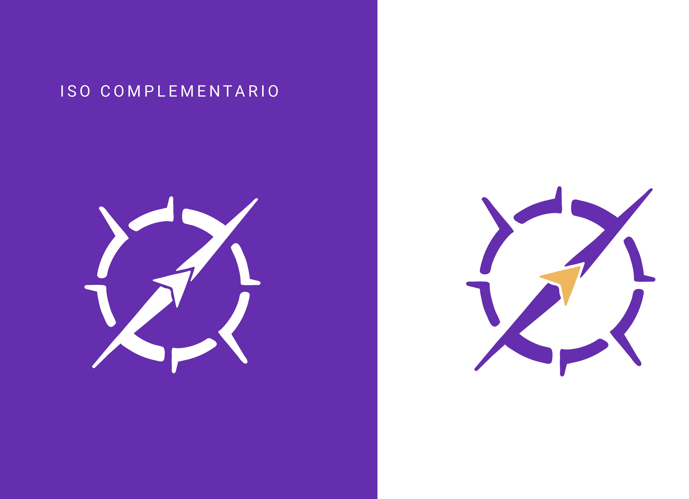

Identidad Corporativa
Tuve la oportunidad de desarrollar la identidad corporativa para emprendedores que estaban dando sus primeros pasos, así como para aquellos con mayor trayectoria. Este proceso se centró en comprender la esencia que deseaban transmitir y en analizar las particularidades de su industria o rubro.
Redes sociales
Flyers para empresa de turismo:
Flyers promocionales diseñados con identidad visual personalizada para cada temática turística. Incorporan elementos gráficos distintivos de la marca 'Vete de Viaje', como mapas, fotografías representativas y paletas de colores temáticas, que destacan las características únicas de cada destino. Ideales para captar la atención y transmitir el espíritu de cada experiencia de viaje.

Historias para empresa de turismo:
Historias diseñadas para Instagram con identidad visual adaptada a cada temática de promoción turística. Incluyen elementos gráficos alineados a la identidad de la marca 'Vete de Viaje', utilizando mapas, fotografías representativas y colores que destacan la propuesta de cada viaje.


Trabajo para una empresa de turismo:
Esta empresa necesitaba flyers diseñados para sus historias de 9:16, así como también para sus publicaciones de 1:1 en Instagram.
Trabajo para una Óptica:
En este proyecto, realicé la edición de fotos y la creación de flyers con una proporción de 1:1 específicamente para su cuenta de Instagram.
Trabajo para un cliente:
Mi cliente requería diseños de flyers con una relación de aspecto de 9:16 específicamente para su contenido en TikTok, manteniendo coherencia con su identidad gráfica establecida.
Proyecto:
Lleve a cabo un proyecto independiente para adquirir nuevas habilidades. Me enfoqué en aprender técnicas de edición de videos.
Galería de videos
Proyecto independiente con el objetivo de adquirir nuevas habilidades en el uso de AI. y AE.

Introducción personalizada para una creadora de YouTube como parte de mi práctica profesional.

Proyecto para el cual me encargué de desarrollar una identidad visual. Este video representa el concepto de la marca.
❤ Gracias por llegar hasta acá ❤